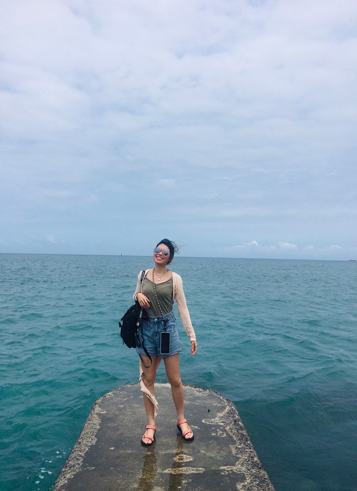
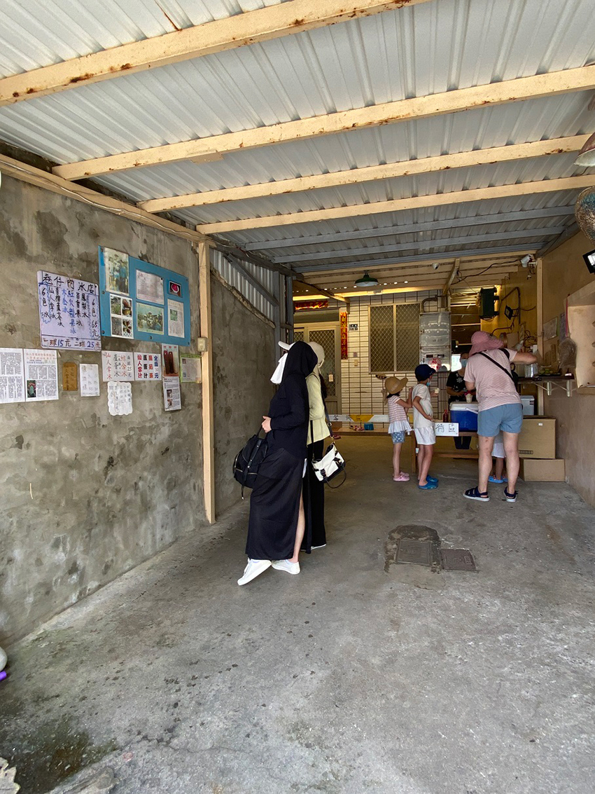
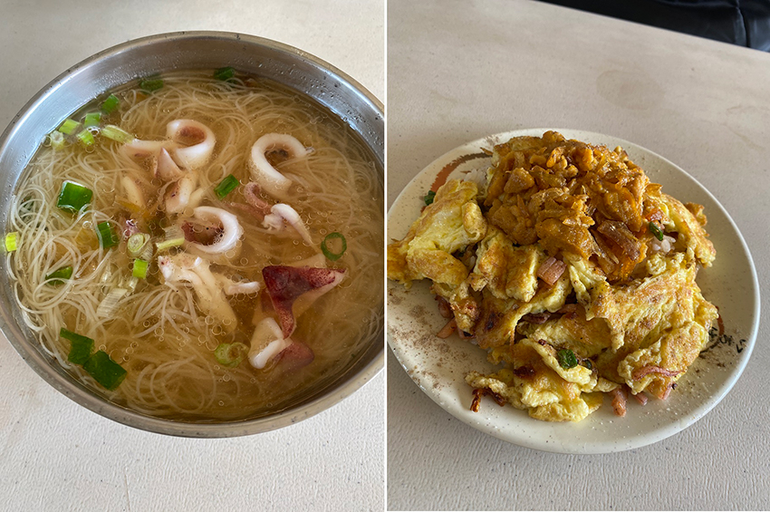
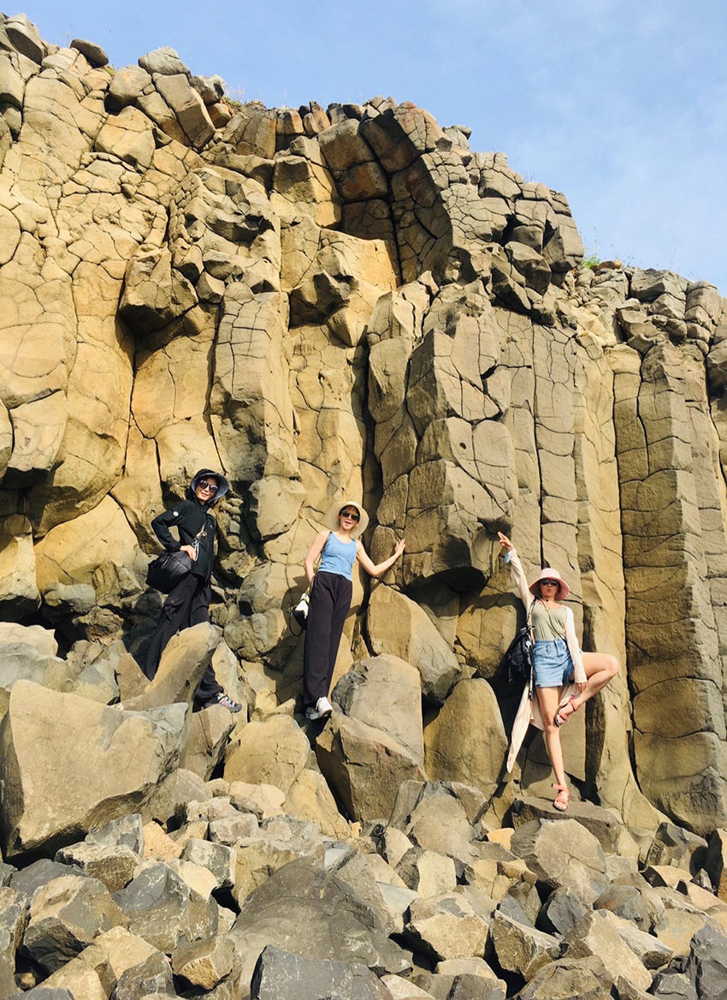
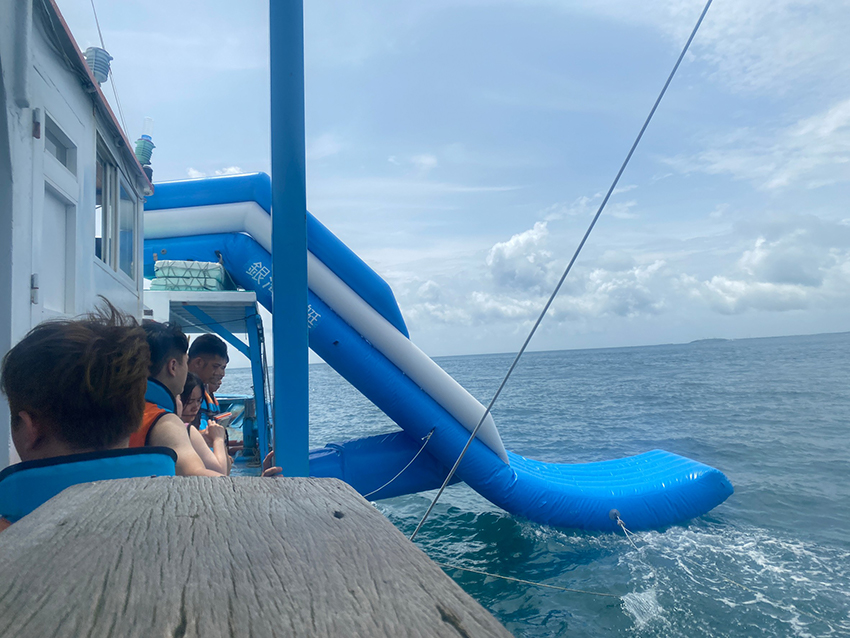
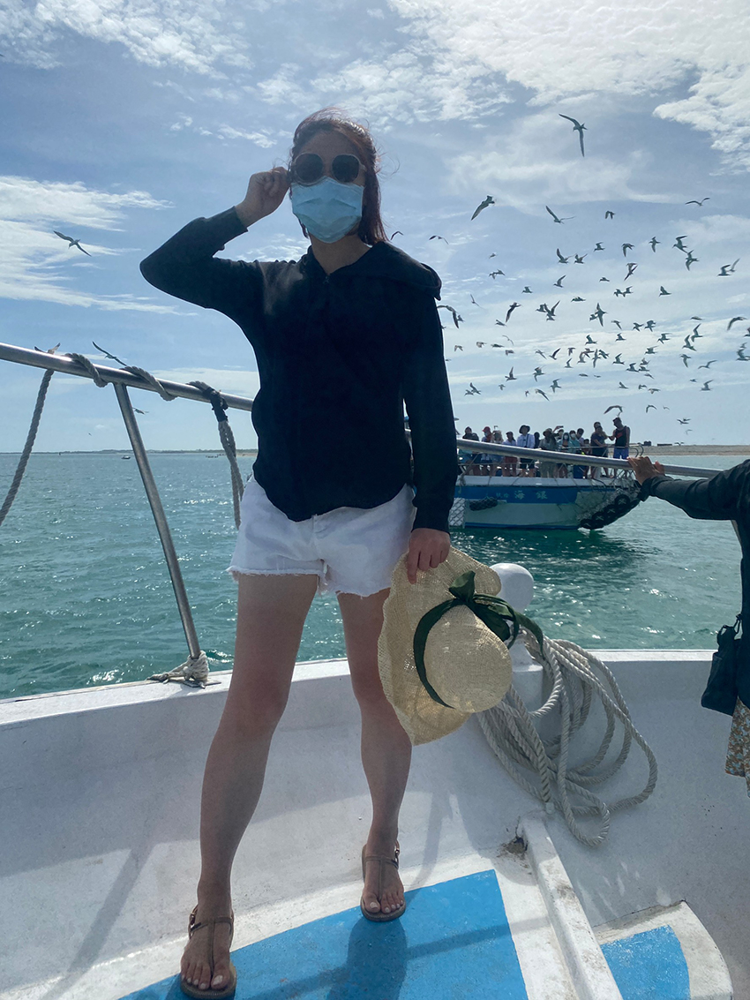
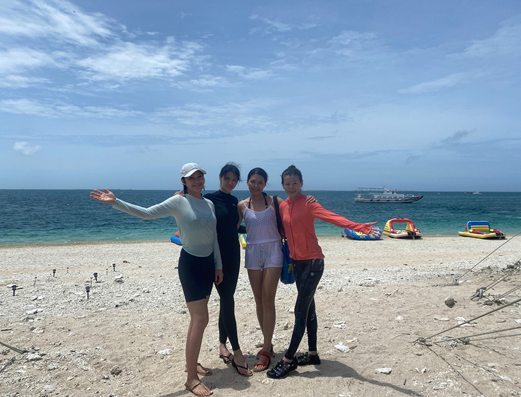
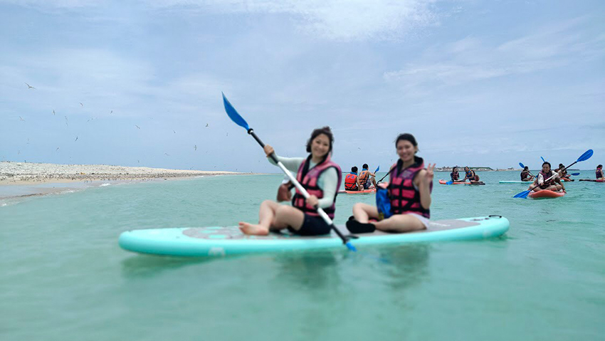
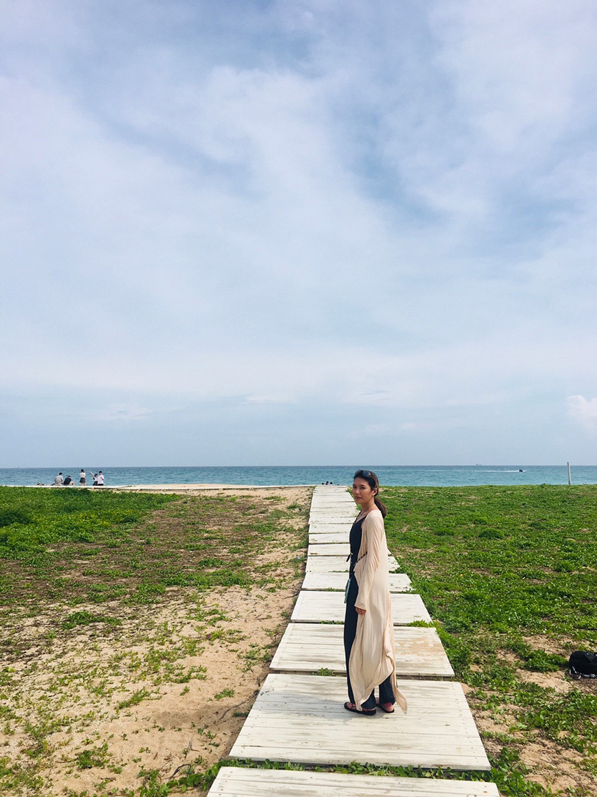

今年三月因友人想玩SUP，號召了幾位大齡女子一起三天兩夜的澎湖旅遊。本以為澎湖很小，三天兩夜可以玩遍澎湖，實際規劃行程後，西嶼/ 白沙/湖西鄉的景點走完旅程也差不多結束了，吉貝與七美下次再去吧。
這次旅程的機票住宿都是跟旅行社購買，還有包含三天機車租借跟半天的導覽與水上活動。第一天行程安排在西嶼鄉；第二天跑旅行社安排的行程，晚上逛市區；第三天早上市區買名產，之後在湖西鄉跑景點。
【第一天】到澎湖後搭飯店接駁車(計程車)去日立飯店放行李->步行至附近的行天宮拜拜保佑旅途順利->機車行接駁車來行天宮帶我們去租車->機車裡面沒有太多汽油，先去加油 100元-> 出發至第一個景點:白沙鄉天堂路 ->江巷仔內仙人掌冰->二崁聚落( 二馬豆花)->中餐：阿虹小管麵線與海膽炒飯->鯨魚洞->池東大菓葉玄武岩->雙曲橋->池西岩瀑->夢幻沙灘->回市區-> 飯店check in->郵局口蔥油餅 （開到晚上六點半）->晚餐：原味漁村小吃
|  |
| 天堂路盡頭。這邊走路要小心，不要滑倒致敬王世堅。 |
|  |
| 在民宅內的仙人掌冰店。鳳梨口味太甜，還是仙人掌的酸甜最美味。 |
|  |
| 阿虹麵線(100元)跟湯頭都好吃， 但小管很少又小塊；海膽炒飯兩人份 400元 |
|  |
| 池西岩瀑。要拍玄武岩來這邊，人潮比池東大菓葉玄武岩少太多了，可以拍個夠。 |
【第二天】白沙岐頭遊客中心->無人島澎澎灘玩水->黑糖冰店->酒吧喝酒聊天。
澎澎灘玩水時不用擔心東西被偷，放在長桌上的東西若不見，會封島不讓船隻進出。
|  |
| 船隻開到海中，可以自由選擇玩滑梯/從二樓跳水/擺盪入海。其實蠻多人怕水的，沒多久船艙就已經一堆人在休息，我還算水性好，重複玩了好幾次，很划算的感覺。 |
|  |
| 現實的燕鷗。我們這艘船飼料餵完後，他們就轉去另一艘船覓食，順手幫友人拍了一張。 |
|  |
| 四位不常照相的大齡女。看看這pose，暴露了年紀啊 |
|  |
| 站不起來的SUP。照片是工作人員幫忙拍的，會放在臉書上供遊客下載。左後方白色區域是燕鷗繁殖區，工作人員不斷告誡不能划到那邊去，會被罰錢，是真的會罰的那種。 |
【第三天】checkout->行李寄放大廳->中央老街買伴手禮->伴手禮寄放飯店->億門沙灘 白灣景觀餐廳吃海鮮->南寮古厝->果葉灰窯->奎壁山遊憩區-> 摩西分海->還機車-> 機車租借行載回旅館->飯店接駁車載我們去機場 (免費) -> 旅行社失誤 ，滯留在澎湖->夢砌民宿
|  |
| 白灣景觀餐廳外的沙灘。曬這麼黑又會有泰國人跟我打招呼了。 |
【必備品】
1. 駕照。絕對絕對不要帶到行照。
2. 鞋底防滑的鞋子/涼鞋。像在天堂路上走時，同行友人的帆布鞋就有點滑，我穿的是Teva涼鞋，防滑效果不錯。
3. 手機掛帶。租機 車坐後座導航的人非常需要，否則一不小心手機就噴出去。
4.手機防水袋。玩水時也可以拍照
【注意事項】
1.潮汐時間：天堂路與摩西分海皆是要先看好潮汐時間的頂點，以免到了現場，只看到一片汪洋。
2.飯店插座數目。我們這次住的是四人房，插座明顯不夠，下次若住多人房，我會帶延長線。
3.玩水上活動時不要穿拖鞋，會掉到海裡。
4.班機起飛是否有改時間
【伴手禮】
誠一干貝粒；小管醬；澎湖絲瓜;春仁黑糖糕